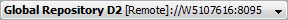

Add from remote template wizard
The Add from remote template wizard allows the user to consume a template (component, folder or solution) from a remote Content Repository into a solution located in the local repository.
|
Only users with the Architect functional role as part of their security profile can consume a template (from the local or a remote repository), using the Add from template process. |
A template is used to create generic content that can be reused in a solution, speeding up the solution build process. Once a template has been consumed, any template tracking information (information that links the template to the repository which was used to create it) can be viewed using the Consumed Templates window. For more information about templates, refer to the Content Management overview topic.
The Add from remote template wizard consists of the following screens:
The Login step is the first screen of the wizard. It allows the user to ping and log into a remote repository, by entering the required URL details and user credentials.
This screen consists of the following:

Once a connection has been chosen, the Login screen will be populated with the saved remote connection parameters, except for the password.
|
The Connection history drop down list will be displayed, once a remote connection has been saved successfully in the user directory. |
 Ellipsis - opens the URL description dialog. This dialog allows the user to delete a saved remote connection or edit its description. Any saved changes made here will be reflected in the Connection history drop down list.
Ellipsis - opens the URL description dialog. This dialog allows the user to delete a saved remote connection or edit its description. Any saved changes made here will be reflected in the Connection history drop down list.
Connection description (optional) - allows the user to enter a description that can be used to identify the remote repository. The description field is limited to 32 characters.
HTTPS - default connection protocol (to change the protocol type use the drop down list)
Host: - host address, it can be a DNS or IP address
Port: - port number
Ping - checks for the availability of the remote repository, using the user-defined URL details. If the repository is available, a green icon will be displayed next to the Ping button. There are three Ping states:
User name: - remote user name
Password: - remote user password
Login - log into the remote repository using the user-defined user credentials
|
The remote user account will be locked after three failed login attempts (default security setting of the remote user on the remote repository). |
If the login has been successful, a green icon will be displayed next to the Login button. There are three Login states:
The Select template step is the second screen of the wizard. It displays:
- the URL details - Location (<ProtocolType>://<HostAddress>:<PortNumber>)
- the remote Content Repository name (for example, Global Content Repository)
- templates available in the remote repository to the user according to their access rights.
The Configure options step is the third screen of the wizard. It displays information about the template that will be consumed. It also allows the user to:
- choose the version of the template to consume
- create a new template configuration or use an existing configuration to consume an updated version of the template
- view the external web page, via the URL, using the default browser.
This screen consists of:
Select <template name> version: - allows the user to choose the version of the template to consume. This list will only be available if there is more than one version of the template. By default, the latest version of the template will be selected.
Template configuration: - when updating a component template, displays the template configuration options (not available for a folder or solution template):
- New configuration - allows the user to create a new configuration. The name of the configuration can be defined in the Configuration name field on the next screen (Configure targets) of the wizard. The configuration will be saved in the solution once the template has been consumed. Any saved configuration(s) can be reused when updating the same component template.
- Reuse existing configuration - allows the user to choose an existing configuration to consume the template from the drop down list (for example, <configuration name> [<revision number>]). When the user has selected an existing Configuration, the Configuration name field will be disabled in the next screen (Configure targets) of the wizard.
|
The Template configuration area will not be displayed if:
|
External Link (URL): - displays the web URL specified by the user when creating the template
Open - opens the URL specified in the External Link (URL): using the user's default browser
Template description: - displays the template description added by the user when creating the template
Template Tracking:
- checked - this template revision contains tracking information that links the template to the repository which was used to create it. When the template has been consumed by a solution, its tracking information can be viewed in the Consumed Templates window. The tracking information is used to evaluate the state of the template(s) and informs the user about any updates available on specific component template(s).
- unchecked - this template revision contains no tracking information.
The Configure targets step is the final screen of the wizard. It displays information about the component templates that will be consumed. It also allows the user to:
- create a new template configuration name
- determine how a conflict(s) will be resolved between the component templates and the referenced components in the solution
- either consume the component templates using the original template structure or customise the component template target location.
|
The Configuration name option will not be displayed if there is no template tracking information in the selected template. |
|
|
When consuming a folder or solution the following options are disabled by default:
|
This screen consists of the following areas:
Configuration name - allows the user to specify a configuration name that will be saved in the solution once the template has been consumed
|
If the configuration name field is left blank, it will be populated with the default configuration name [Default configuration]. |
|
In the case of a component template, any saved configuration(s) can be used when updating the same component template in the same solution. The configuration(s) is available in the Reuse existing configuration drop down list in the second screen (Configure options) of the wizard. |
|
In the case of a folder or solution template, the purpose of the configuration name is to allow the user to differentiate between different consumptions of the same template in the same solution. It is displayed in the Consumed template window, under the Template Structure column. For example, <template name> (<configuration name>). |
|
Template configurations can be deleted via the Consumed template window. |
Select Precedence - allows the user to select how to resolve all the conflicts using the same option:
- Unresolved - set all the component templates to unresolved
- Template - the referenced component (local) will be overwritten by the component template
- Template (Rename) - the component template will be consumed into the same location as the referenced component but it will be renamed (assigned a suffix (<number>) - for example, Applicants (1))
- Local - the referenced component (local) will be used instead of the component template.
Apply - allows the user to apply the selected precedence (set in the Select Precedence: drop down list) to all the conflicts
Use Original Template Structure:
- checked - the component template will be consumed using the original template structure (including all the allowed component types and publishing rules from the template) into the target location
- unchecked - allows the user to customise the target location in the solution for the component templates.
Template Structure displays the component templates in a hierarchical tree structure. The root component being imported will be displayed in bold.
Local Name displays the names of the components located in the solution. A component name can be edited in this column by double clicking on the component name. If there is an unresolved conflict between the template component to be consumed and the component in the target folder, a warning icon will be displayed next to the impacted component name.
Status displays the state of the component template compared to the referenced component in the solution and whether a folder will be created or modified by the Add from template process
- Merged - the component template has been modified and therefore the changes will be merged into the referenced component
- Conflict - there are some conflicts between the component template and referenced component
- New - this component has not been consumed in this solution (or at least not with this configuration)
- Unchanged - both the solution and template components have not been altered and are identical
 - a new folder will be created in the target location with the appropriate allowed component types and publishing rules
- a new folder will be created in the target location with the appropriate allowed component types and publishing rules - either the allowed component types, publishing rules or both will be modified in the target location
- either the allowed component types, publishing rules or both will be modified in the target location


Notes - indicates if a component template has a note attached
 Bold Notes icon - this component has an attached note. Its content can be viewed in the Notes area below the table columns (or using the tooltip)
Bold Notes icon - this component has an attached note. Its content can be viewed in the Notes area below the table columns (or using the tooltip) Grey Notes icon - there is no note attached to this component.
Grey Notes icon - there is no note attached to this component.


Conflicts Precedence - displays the conflict precedence for each component template. The user can choose how an individual conflict should be resolved using an option from the Select Precedence: drop down list.
- Unresolved - set the component template to unresolved
- Template - the referenced component will be overwritten by the component template
- Template (Rename) - the component template will be consumed into the same location as the referenced component but it will be renamed (assigned a suffix (<number>) - for example, Applicants (1))
- Local - the referenced component (local) will be used instead of the component template
- Local to recycle bin - the referenced component will be used but it will be moved into the solution Recycle Bin
- Resolve later - the component template will be consumed and the referenced component will be renamed (assigned a suffix - conflict (mine) - for example, LDS - conflict (mine)). This option allows the user to compare or merge the components at a later time.
Valid - displays the state of the component template compared to the referenced component in the solution
 Valid icon - there is no conflict with this component and the underlying folder structure is valid
Valid icon - there is no conflict with this component and the underlying folder structure is valid  Warning icon - there is a warning for this component but it can still be consumed into the solution
Warning icon - there is a warning for this component but it can still be consumed into the solution Error icon - there is an error with this component which must be resolved before it can be consumed into the solution.
Error icon - there is an error with this component which must be resolved before it can be consumed into the solution.


{kind=link}
{kind=link}
{kind=link}
{kind=link}
{kind=link}
{kind=link}
{kind=link}
{kind=link}
Target - displays the target location where the template will be consumed
 Ellipsis - opens the Map <component name> to Existing Folder dialog. This dialog allows the user to customise the target location for a new component template. This button will be displayed when the Use Original Template Structure checkbox in the Original Template Structure area is unchecked.
Ellipsis - opens the Map <component name> to Existing Folder dialog. This dialog allows the user to customise the target location for a new component template. This button will be displayed when the Use Original Template Structure checkbox in the Original Template Structure area is unchecked.
 Change Visible Columns - opens the Change Visible Columns dialog.
Change Visible Columns - opens the Change Visible Columns dialog.

This dialog allows the user to choose which column(s) to show or hide. The user can also right click on any column header to display the Change Visible Columns dialog.
The Notes area displays the content of the note that is attached to the selected component.
When the user clicks Finish, the process is sent to the Job Submission Console, ready for execution.